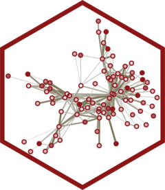

WSSmod: Weighted Sum Scores for Protein Network Modules
Source:R/WSSmod-package.R
WSSmod-package.RdComputes Weighted Sum Score (WSS) module-level summaries from proteomic data. Protein-level values are sign-aligned to their association with core biomarkers and combined within 'STRING' network modules, weighted by network connectivity and association strength. Bundled reference modules and a fitted 'joinet' model also allow all module scores to be predicted from age, sex and a small panel of plasma biomarkers, without measuring the full proteomic panel. The method is described in Butler et al. (2026) doi:10.64898/2026.08.14.26360394 .
Details
WSSmod computes Weighted Sum Score (WSS) values for protein network modules, and predicts them from a small panel of plasma biomarkers.
Scoring modules from proteomic data
calculate_WSS()scores each module from a normalized and scaled samples-by-proteins matrix, using the bundled reference modules or your own.project_rank_norm()projects new values onto a frozen rank-normal reference, for normalizing new samples against a reference cohort.
Predicting module scores from plasma biomarkers
normalize_wss_biomarkers()rank-normalizes raw biomarker values, for a single patient or a cohort.predict_WSS()predicts all module scores from age, sex and the normalized biomarkers (needs the suggested packagesglmnetandjoinet).
Bundled reference data
list_prebuilt_wss(),load_prebuilt_wss(),load_prebuilt_terms(),load_prebuilt_wss_model()andload_prebuilt_biomarker_reference()give access to the prebuilt reference set.wss_example_expression and wss_example_biomarkers are small simulated datasets for trying out the functions.
The method is described in Butler et al. (2026), https://doi.org/10.64898/2026.08.14.26360394.
Author
Maintainer: Robert Butler rrbutler@stanford.edu (ORCID)
Other contributors:
WSSmod authors [copyright holder]